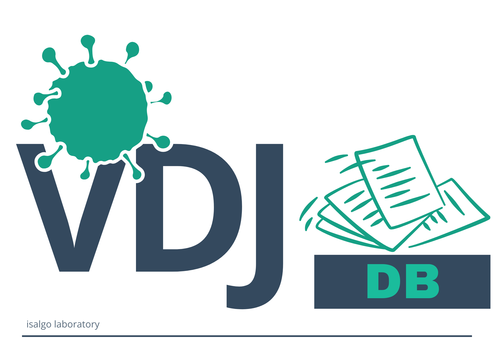
A curated database of T-cell receptor sequences with known antigen specificities — the starting point for training and benchmarking machine-learning models of antigen recognition.
vdjdb.com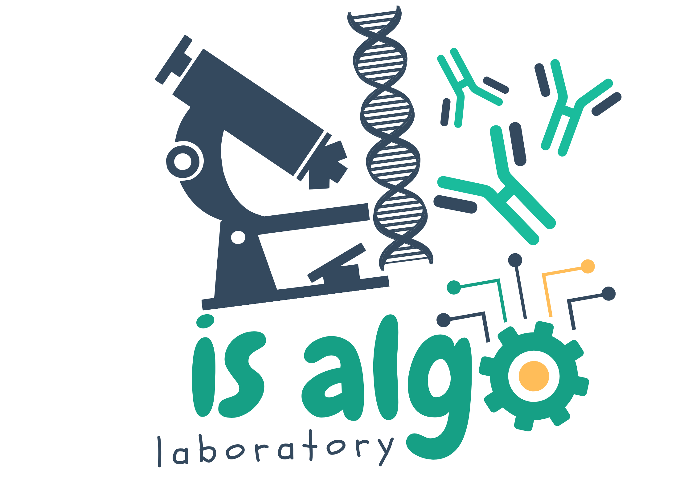
Immunosequencing Algorithms Laboratory
We read the adaptive immune receptor repertoire — millions of sequences that record every infection, vaccine and tumour the immune system has met — and build the algorithms, databases and structural models that turn that signal into understanding.
Every immune repertoire is a living archive. We learn to read it — linking sequence, structure and specificity to tell self from non-self.
Mapping the antigen specificities hidden in high-throughput TCR sequencing data, and curating a database of receptors with known targets. We infer sequence-motif biomarkers statistically and connect repertoire structure to the immunogenicity of its cognate antigens.
In-silico modelling of TCR:peptide:MHC structures, tying biophysics of interactions to systems biology of repertoires. We study immune evasion and detection, thymic selection and T-cell differentiation. We build statistical models of TCR:pMHC contacts to predict binding for unseen epitopes.
Ranking foreign and self peptides by their predicted ability to provoke a response. We search for the physicochemical signatures the adaptive immune system uses as a self-versus-non-self classifier, and turn them into tools for selecting optimal neoantigen targets.
Screening thousands of repertoire datasets from vaccinated, convalescent, previously-infected and healthy donors to find correlates of immunity in COVID-19 "involuntary experiment" — immunogenic SARS-CoV-2 epitopes, the TCRs that recognise them, and the imprint that past and ongoing infection and vaccination leave behind.
Using TCR and BCR profiling of tumour and blood RNA-seq and single-cell data to stratify patients, predict therapy outcomes and inform prognosis — and combining immunogenicity, repertoire profiling and complex modelling to design neoantigen vaccines.
Everything we make ships free and open-source — from curated data to blazingly fast and accurate algorithms.

A curated database of T-cell receptor sequences with known antigen specificities — the starting point for training and benchmarking machine-learning models of antigen recognition.
vdjdb.com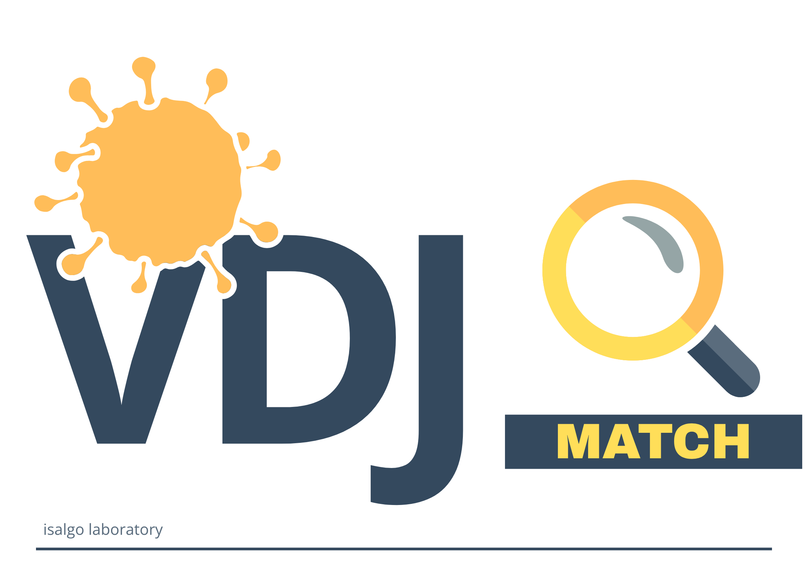
Matches T-cell receptor repertoires to their antigen-specificity profiles, annotating raw sequencing output with likely targets.
github:vdjmatchExploratory analysis of large volumes of immune-repertoire data — turning thousands of AIRR-formatted files into comprehensive statistical summaries via parquet and polars.
github:vdjtools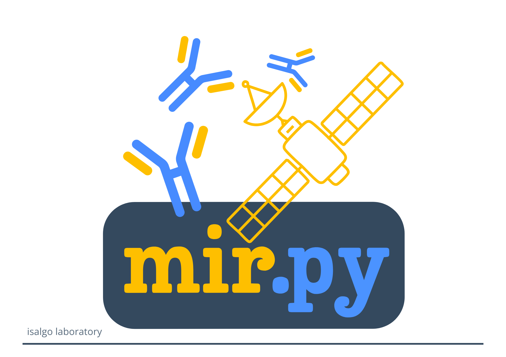
A universal immune-repertoire analysis library implementing a comprehensive set of state-of-the-art algorithms. Drop it into pipelines and notebooks with ease — Claude Code and GitHub Copilot ready, via skills.
github:mirpy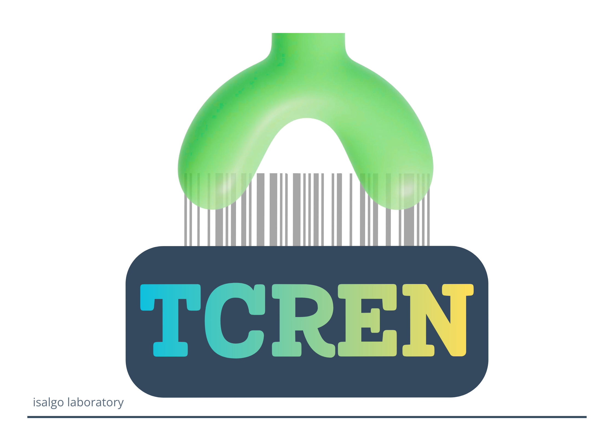
Annotate, score and rank TCR:pMHC structures — modelled or native — and predict binding and affinity.
github:tcren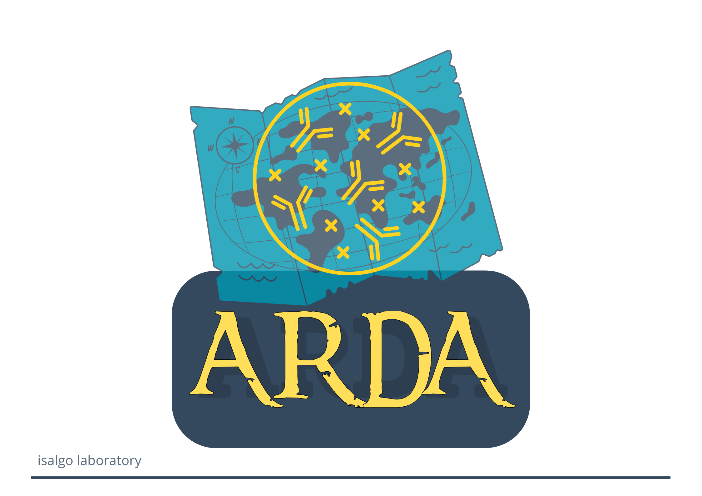
Ultrafast V-D-J allele and CDR/FR region mapper for nucleotide and protein immune-receptor sequences — from small FASTA files to large FASTQ volumes across amplicon, RNA- and single-cell sequencing. Built on mmseqs2.
github:ardaA line through a decade of immune-repertoire research, from error correction to structure-based prediction.
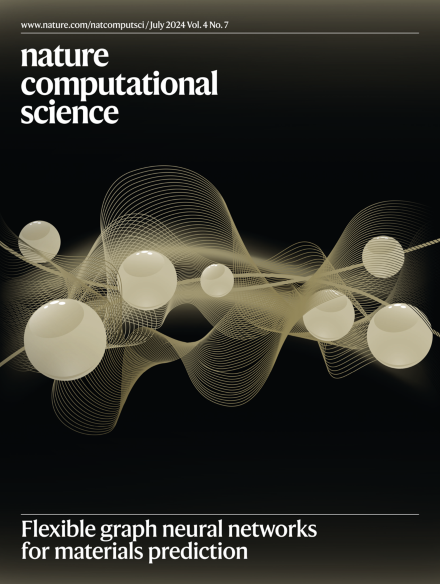
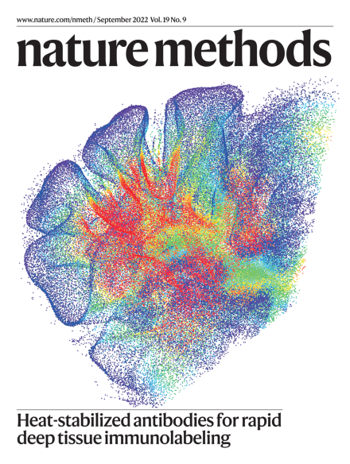
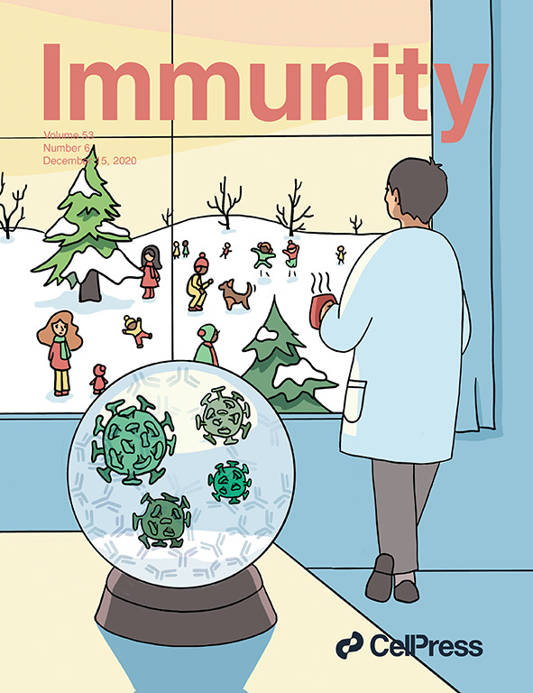
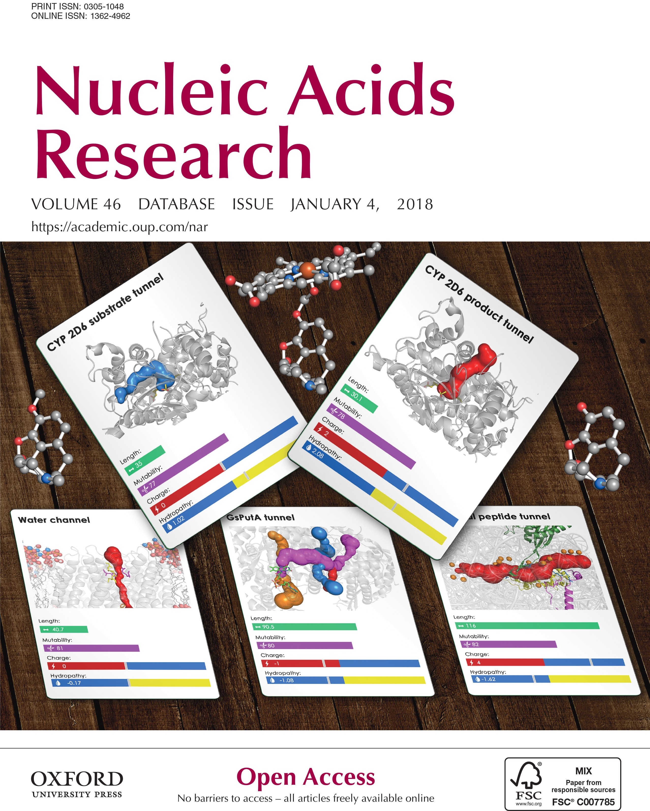
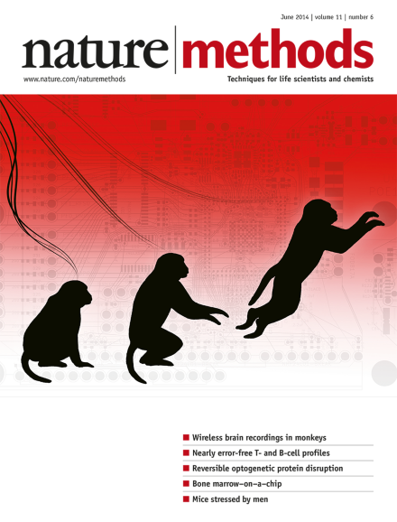
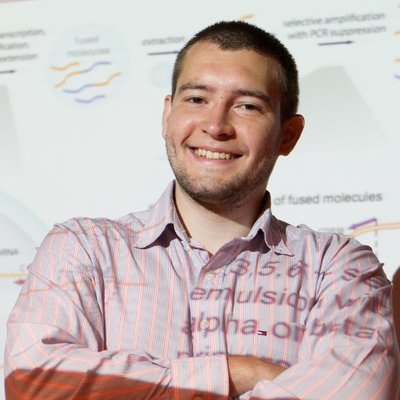
Mikhail “Mike” Shugay, Ph.D
Principal investigator
Elizaveta Vlasova, M.Sc
Doctoral student · RNRMU & ITMO
Daniil Luppov, M.Sc
Doctoral student · RNRMU & MIPT
Anna Koneva, M.Sc
Research associate · RNRMU
Dmitry Bagaev, Ph.D
Former M.Sc student · now Eindhoven University of Technology, NL
Vadim Karnaukhov, Ph.D
Former Ph.D student (Skoltech) · now Institut Curie, Paris
Yulia Kremlyakova, M.Sc
Former research associate · now Vall d'Hebron Institute of Oncology, Barcelona
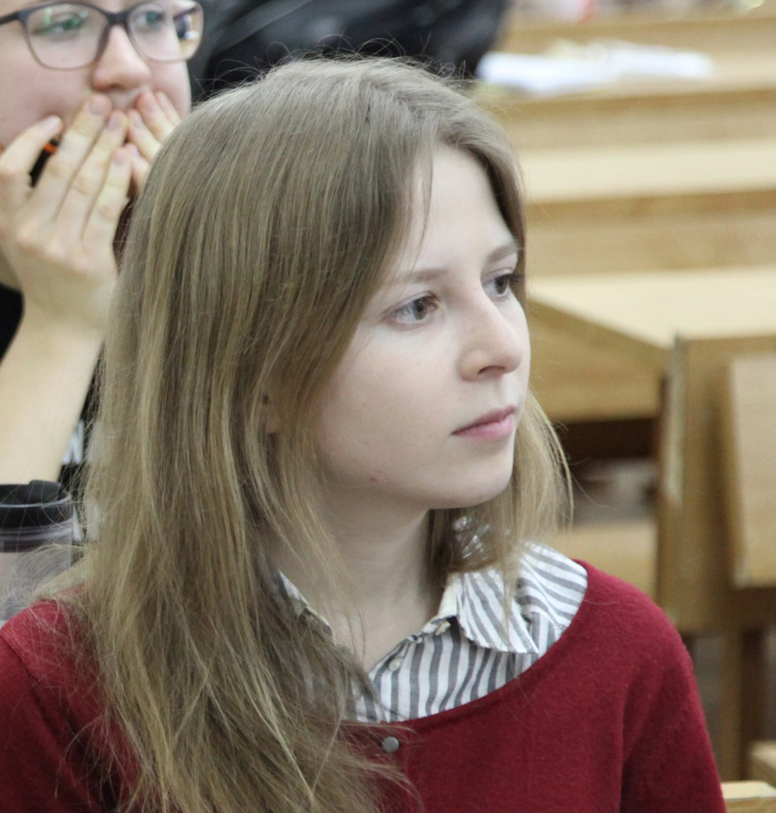
Anna Obraztsova, M.Sc
Former M.Sc student · now Genentech, San Francisco
Anastasiia Alexandrova
Diploma · TCR:pMHC structure modelling (MIPT)
Mikhail Podsytnik
Diploma · T-cell repertoire annotation (ITMO)

1 Institute of Bioorganic Chemistry of the Russian Academy of Sciences
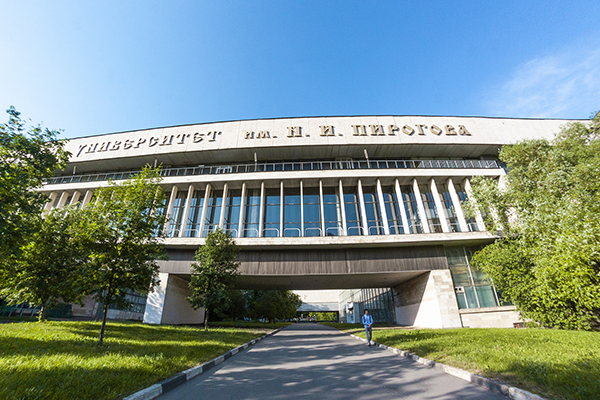
2 Institute of Translational Medicine, Russian National Research Medical University
Moscow, Russia
Our work is built with an international network of immunologists, structural biologists and computational scientists.

Prof. Sarah Teichmann
Cambridge, United Kingdom

Prof. Hashem Koohy · Prof. Persephone Borrow
Oxford, United Kingdom
Prof. Andrew Sewell · Prof. David Price
Cardiff, United Kingdom
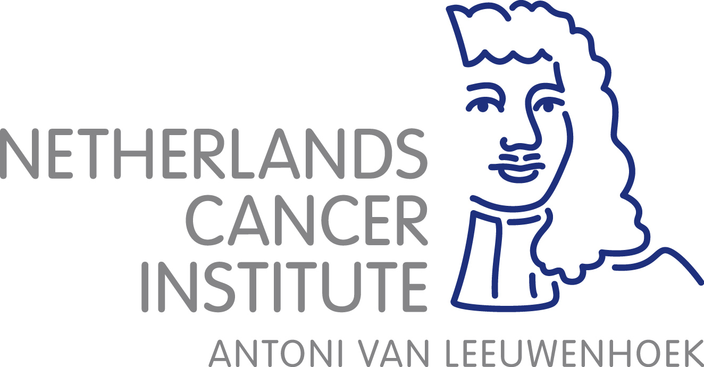
Prof. Ton Schumacher
Amsterdam, The Netherlands

Prof. David Klatzmann · Prof. Encarnita Mariotti-Ferrandiz
Paris, France
Prof. Ola Grimsholm
Gothenburg, Sweden
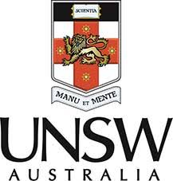
Prof. Fabio Luciani
Sydney, Australia